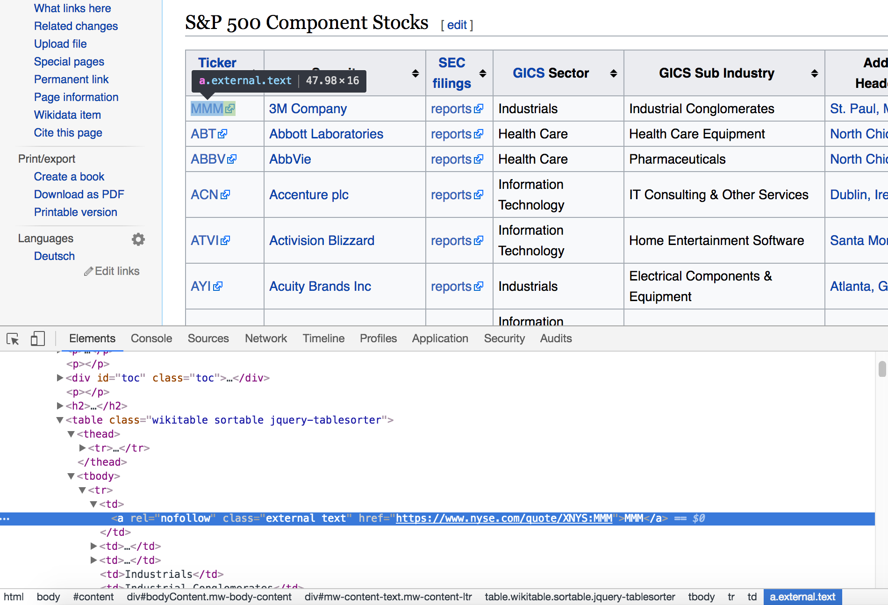
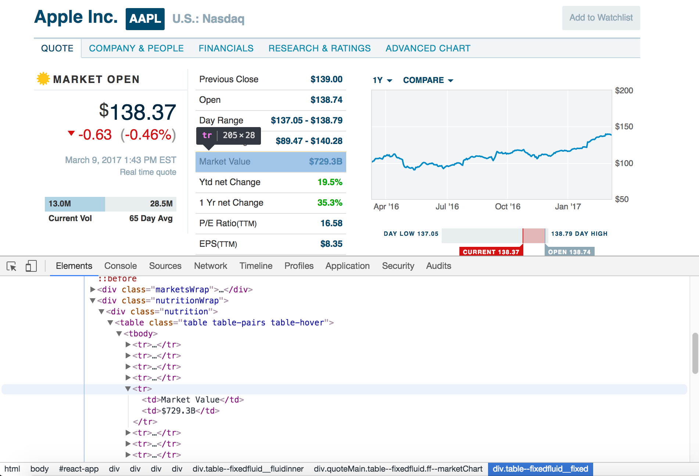

BeautifulSoup is an elegant Python library which enables you to "scrape" or extract content from the web. It does this by allowing you to create a BeautifulSoup object from a website's URL, which subsequently contains the html content for that particular website. Once a BeautifulSoup object is created, you can use its member functions to search for the content that you are interested in, along with a variety of other things. Of course, this requires inspecting the html source code beforehand so that you know which tags to look for.
As an initial exercise to test out BeautifulSoup's features, I wanted to apply it to the stock market. I was interested in generating a list of all dividend stocks in Nasdaq, S&P 500, and the dow. I figured this was a good application of web scraping with Python - helping me extract mass amounts of data from the web which would be too tedious to do manually. In this case, I wanted a list of all the top dividend stocks, along with their market cap and 52-week price % change.
I decided to use Barron's stock website, since it contained all the information above. Additionally, it was fully rendered in HTML, helping me avoid an extra layer of detail by not having to scrape JavaScript content. However, note that many websites don't like being scraped by automated scripts or programs, so we must take care to introduce delays in between our URL requests and not overload the website with too many requests in a short period of time. After all, we might be collecting information on hundreds or even thousands of different stocks at once.
Before visiting Barron's, we first need a list of all the components in a particular stock index that we are targeting. This list can be easily obtained from a source like Wikipedia, which has a page entirely devoted to listing all the companies in the S&P 500 and Dow 30. It does not have one for Nasdaq, however, so we need to get a little creative to obtain the Nasdaq stock list. Luckily Nasdaq is nice enough to provide such a list, downloadable in CSV format, right off their site. Therefore, web scraping will only be required to get the components for the other two indexes. Both Wiki pages for S&P and the Dow are similarly structured, so let's go ahead and visit the S&P 500 components wikipedia page. Right-click → inspect to pull up the following view:
Inspecting the HTML source code reveals that there is a table element that contains a bunch of table-row (tr) elements. Each tr element is devoted to one company, and it is made up of multiple table-data (td) elements. These td elements contain the company name and ticker symbol which we will need to store in some type of data structure before looking up the stock quote in Barron's. A dictionary works well for this. Now let's take a look at Barron's website. Enter the stock quote for a company of your choice and right-click → inspect again:
Notice that the data for a stock quote is enclosed within a div belonging to the class "nutrition"...🤔 (don't ask me, I'm not a Barron's web developer). Within this appropriately named div, we see another table element containing td and tr elements which have our specific pieces of data. Notice a pattern here - numbers are frequently displayed using table elements in HTML, so you will get used to recognizing this as you get more experience with BeautifulSoup. Now that we've examined the HTML, we can proceed to start writing our web scraper. Before we can do anything, we will first need to declare the required imports. Let's add these to the top of our file.
"""Program to collect and present stock market data for Nasdaq, S&P 500, and Dow 30 indexes."""
import os
import sys
import math
import csv
import time
import bisect
import urllib2
import string
import requests
import random
import bs4
from bs4 import BeautifulSoupAs I mentioned before, we'll need to obtain information separately for each of the major indexes that that we want to collect
stock data for. Therefore, we can create a common base class called Index which stores information
on stocks that belong to it. Here is the Index class definition:
class Index:
def __init__(self, name, index_link):
self.name = name
self.index_link = index_link
self.index_dict = {}
self.stock_list = []
self.stock_data = []
self.out_file = '../docs/' + name.lower() + '-dividend-stocks-sorted.csv'
def create_dict(self):
if self.name == 'Nasdaq':
self.create_dict_from_csv()
elif self.name == 'S&P 500' or self.name == 'Dow 30':
self.create_dict_from_web()The create_dict() member function handles the separate mechanisms for generating stocks associated with the three
indexes. Essentially, a new dictionary called index_dict is initialized in the constructor, with the company's ticker
symbol being the key value that matches to a particular company name. This will enable easy lookup for the subsequent web scraping
operations. Notice that create_dict() is choosing between two helper functions depending on the index name. Let's take
a look at the first one, create_dict_from_csv(), which handles the Nasdaq part.
def create_dict_from_csv(self):
with open(self.index_file) as csv_file:
read_csv = csv.reader(csv_file, delimiter=',')
for row in read_csv:
if row[1].find('iShares') == -1 and row[1].find('iPath') == -1:
self.index_dict[row[0]] = row[1]This method handles the opening of self.index_file, the CSV file containing Nasdaq's dividend
stocks. However, one thing to keep in mind is that there are also ETFs and other funds associated with a particular
index; we are not interested in obtaining data for these, only for actual companies. This is why I have the if
statement - it helps filter out some, but not all, of these unwanted funds from the CSV file (those identifiable
with iShares or iPath). Additional filtering for harder-to-identify ETFs and funds will be done in a later step. Now
let's take a look at the next method, create_dict_from_web(), to see how to create a BeautifulSoup
object and parse it.
def create_dict_from_web(self):
# Create a new URL request
user_agent = 'Mozilla/5.0 (Windows NT 6.1; Win64; x64)'
headers = { 'User-Agent' : user_agent }
url = self.index_link
req = urllib2.Request(url, headers=headers)
# Catch potential URL error
try:
response = urllib2.urlopen(req)
except urllib2.URLError as e:
print e.reason
# Create BeautifulSoup object
self.soup = BeautifulSoup(response, 'html.parser')
#store the list of components in a dictionary by ticker symbol
if self.name == 'S&P 500':
for a in self.soup.findAll('table', {'class': 'wikitable sortable'}, limit=1):
for b in a.findAll('tr'):
count = 1
for c in b.findAll('td', limit=2):
if count == 1:
stock_symbol = c.text
count += 1
elif count == 2:
company_name = c.text
self.index_dict[stock_symbol] = company_name
count = 1
elif self.name == 'Dow 30':
for a in self.soup.findAll('table', {'class': 'wikitable sortable'}):
for b in a.findAll('tr'):
count = 1
for c in b.findAll('td', limit=3):
if count == 1:
company_name = c.text
count += 1
elif count == 2:
count += 1
elif count == 3:
stock_symbol = c.text
self.index_dict[stock_symbol] = company_name
count = 1Don't forget that many websites don't like being browsed or scraped by programs. When urllib2 tries to
get a website, the website sees urllib2 as Python-urllib/x.y (x and y
refer to the major and minor version numbers, respectively, for the Python release). However, this identifier can confuse
the site since it does not identify with any browser. It is possible to set a user_agent header so that
urllib2 can identify itself as one of the standard browsers. In our case the request will identify itself as a version
of Internet Explorer with the dictionary of headers passed to urllib2.Request(). This can help avoid unexpected
HTTP errors, since the website we are scraping will think urllib2 is just another standard web browser.
Enclosing the call to urllib2.urlopen() within a try-except block will help us catch any exceptions
that may occur when trying to access the Wikipedia page. If urllib2.urlopen() is successful, we can proceed to create
our BeautifulSoup object, self.soup. We use urllib2.urlopen() to fetch a URL-like object from the website
that we want to scrape, and then store it in the variable response. This URL-like object is then passed in to the
BeautifulSoup() constructor to create the self.soup object, which contains our desired html document in the form
of a nested data structure. Once we have this object, we can use its findAll() member function to locate the html tags
containing the content we want to scrape. In this case, we need the company name and stock ticker symbol.
Inspecting the html source code for the Wikipedia page listing the S&P 500 components reveals that there is a table element
that contains a bunch of table row (tr) elements. Each tr element is devoted to one company, and it is made up of multiple
table-data (td) elements. These td elements contain the company name and ticker symbol which we use to populate our
dictionary. We must use a count variable to keep track of where we are while looping through the tr elements;
the two pieces of information that we want are stored in the 1st and 2nd td elements belonging to a particular tr element
(1st and 3rd for the Dow Components Wikipedia page). Once we have finished adding all the stocks to our dictionary, we can
proceed to looking up the stock quotes in an automated manner. The next step is to add stocks to the Index's stock list.
Let's define our Stock class before we populate self.stock_list.
class Stock:
def __init__(self, symbol, company):
self.symbol = symbol
self.company = company
self.data = []The constructor takes two required arguments, symbol and company (which, if you recall, we are deriving
from the Index member function create_dict()). Additionally, self.data is being initialized
to an empty list. This will store the relevant data that we are interested in extracting for a particular stock. Now that we have a
skeleton for our Stockobject, let's switch gears back to the Index class definition and define a method to
add stocks to our list.
def add_stocks(self):
for key, value in self.index_dict.items():
new_stock = Stock(key, value)
new_stock.query_stock_symbol()
if new_stock.div_yield != None:
self.stock_list.append(new_stock)
#Sort the stock list by yield amount, in desecending order
self.stock_list.sort(key=lambda stock: stock.div_yield, reverse=True)We can easily initialize each new Stock object by using the standard technique for iterating through our dictionary,
looping through self.index_dict.items(). This enables us to use each key-value pair as arguments to the Stock
constructor. However, we need to define additional functionality for the Stock class, since we need to
scrape the stock data from Barron's. Let's define a query_stock_symbol() method in the Stock class:
def query_stock_symbol(self):
# Add wait times in between getting each stock's data to prevent overload
wait_time = round(max(5, 10 + random.gauss(0,3)), 2)
time.sleep(wait_time)
# Check for two different Barron's URLs
url = 'http://www.barrons.com/quote/stock/us/xnas/%s' % (self.symbol)
page = requests.get(url)
if page.status_code == 404:
url = 'http://www.barrons.com/quote/stock/us/xnys/%s?mod=DNH_S' % (self.symbol)
# Create a new URL request
user_agent = 'Mozilla/5.0 (Windows NT 6.1; Win64; x64)'
headers = { 'User-Agent' : user_agent }
req = urllib2.Request(url, headers=headers)
# Catch potential URL error
try:
response = urllib2.urlopen(req)
except urllib2.URLError as e:
print e.reason
# Create BeautifulSoup object
self.soup = BeautifulSoup(response, 'html.parser')
# Find stock price
for a in self.soup.findAll('span', {'class':'market__price'}):
stock_price_str = a.text.replace(',', '')
if stock_price_str != 'N/A':
self.stock_price = float(stock_price_str)
else:
self.stock_price = None
# Append remaining data
for a in self.soup.findAll('div', {'class': 'nutrition'}):
for b in a.findAll('td'):
self.data.append(b.text)
# Extract remaining data
self.market_cap = None
for i in xrange(0, len(self.data)):
if self.data[i] == 'Market Value':
self.market_cap = self.data[i+1]
elif self.data[i] == 'Ytd net Change':
self.ytd_net_change_str = self.data[i+1].strip('%')
if self.ytd_net_change_str != 'N/A':
self.ytd_net_change = float(self.ytd_net_change_str)
else:
self.ytd_net_change = -1
elif self.data[i] == 'Div & Yield':
div_amount_str = self.data[i+1].split(' (')[0].strip(' ')
div_amount_str = div_amount_str.strip('$')
div_yield_str = self.data[i+1].split(' (')[1].strip(')')
div_yield_str = div_yield_str.strip('%')
if div_amount_str != 'N/A':
self.div_amount = float(div_amount_str)
self.div_yield = float(div_yield_str)
else:
self.div_amount = None
self.div_yield = NoneNotice that the first part is similar to the create_dict_from_web() method in our Index class,
where we create a self.soup object for parsing. The only difference is the code below:
# Check for two different Barron's URLs
url = 'http://www.barrons.com/quote/stock/us/xnas/%s' % (self.symbol)
page = requests.get(url)
if page.status_code == 404:
url = 'http://www.barrons.com/quote/stock/us/xnys/%s?mod=DNH_S' % (self.symbol)We have to choose the url for each individual stock query. Barron's has two different url versions that
it uses for its stock quotes, so we check requests.get() on one version to see if it was successful. If
page.status_code returns 404, then we reset url to the other version. Python's string
replace functionality enables us to easily modify the url string for each ticker symbol, since the
symbol is contained within the URL for each stock quote. Once our url string is defined, we create a
BeautifulSoup object the same way as before. Let's take a look at what happens after that.
# Find stock price
for a in self.soup.findAll('span', {'class':'market__price'}):
stock_price_str = a.text.replace(',', '')
if stock_price_str != 'N/A':
self.stock_price = float(stock_price_str)
else:
self.stock_price = None
# Append remaining data
for a in self.soup.findAll('div', {'class': 'nutrition'}):
for b in a.findAll('td'):
self.data.append(b.text)Again, we are using findAll() to locate the information we need. In this case, the price of the stock is located
in a span element identified by the class market__price. Since numbers $1000 or greater are listed with a comma on
the site, we need to remove the comma and replace it with whitespace since Python doesn't understand numbers with a comma. Then,
we can convert the string to a float. The second loop just gathers the remaining data, and stores it in
the list data that we declared earlier. We process this list in the next part below.
# Extract remaining data
self.market_cap = None
for i in xrange(0, len(self.data)):
if self.data[i] == 'Market Value':
self.market_cap = self.data[i+1]
elif self.data[i] == 'Ytd net Change':
self.ytd_net_change_str = self.data[i+1].strip('%')
if self.ytd_net_change_str != 'N/A':
self.ytd_net_change = float(self.ytd_net_change_str)
else:
self.ytd_net_change = -1
elif self.data[i] == 'Div & Yield':
div_amount_str = self.data[i+1].split(' (')[0].strip(' ')
div_amount_str = div_amount_str.strip('$')
div_yield_str = self.data[i+1].split(' (')[1].strip(')')
div_yield_str = div_yield_str.strip('%')
if div_amount_str != 'N/A':
self.div_amount = float(div_amount_str)
self.div_yield = float(div_yield_str)
else:
self.div_amount = None
self.div_yield = NoneHere, we extract the remaining data - the market cap, ytd net change, and dividend/yield. Let's jump back to the
Index class where we defined our add_stocks() function.
def add_stocks(self):
for key, value in self.index_dict.items():
new_stock = Stock(key, value)
new_stock.query_stock_symbol()
if new_stock.div_yield != None:
self.stock_list.append(new_stock)
#Sort the stock list by yield amount, in desecending order
self.stock_list.sort(key=lambda stock: stock.div_yield, reverse=True)Now that we have queried our stock symbol, we can add the stock to stock_list, as long as it is a
dividend stock. We are not interested in non-dividend stocks for this exercise. Once we populate the list, we need
to sort it, which can be easily achieved using Python's sort feature. This method takes a key value as
its primary argument. Notice that we use a lambda function which evaluates to the value of div_yield
as the key value. Additionally, we set reverse=True so that the list is
sorted in descending order (the option can be left empty if you want ascending order).
Great! We've covered everything that involes scraping the requisite data from Barron's website. However, now we want
to see the data printed out in some form - like a CSV file. The following method, from_dict_to_csv(),
handles this functionality.
def from_dict_to_csv(self):
self.add_stocks()
self.headings = ['Company','Symbol','Current Price','Market Cap','Dividend', 'Yield', '52-Week Return']
for i in xrange(0, len(self.stock_list)):
new_dict = {}
new_dict['Company'] = self.stock_list[i].company
new_dict['Symbol'] = self.stock_list[i].symbol
new_dict['Current Price'] = self.stock_list[i].stock_price
new_dict['Market Cap'] = self.stock_list[i].market_cap
new_dict['Dividend'] = self.stock_list[i].div_amount
if self.stock_list[i].div_yield != None:
new_dict['Yield'] = str(self.stock_list[i].div_yield) + '%'
else:
new_dict['Yield'] = 'N/A'
if self.stock_list[i].ytd_net_change != None:
new_dict['52-Week Return'] = str(self.stock_list[i].ytd_net_change) + '%'
else:
new_dict['52-Week Return'] = 'None'
self.stock_data.append(new_dict)
try:
with open(self.out_file, "wb") as csv_file:
writer = csv.DictWriter(csv_file, fieldnames=self.headings, dialect='excel', delimiter=',', quoting=csv.QUOTE_NONNUMERIC)
writer.writeheader()
for data in self.stock_data:
writer.writerow(data)
except IOError as (errno, strerror):
print "I/O error({0}): {1}".format(errno, strerror)Here, we create a dictionary of headers with the column titles that we want in our CSV file. Then, we add each dictionary
(which corresponds to one stock) to a list of dictionaries, stock_data. Once our list of dictionaries is fully
populated, we can proceed to use Python's csv.DictWriter() feature to print the data to our output file. All the
functionality discussed thus far has been tied together in the rest of the program, shown below:
def generate_dividend_stocks():
nasdaq_file = '../docs/dividend-stocks-nasdaq.csv'
nasdaq_index = Index('Nasdaq', nasdaq_file)
nasdaq_index.create_dict()
nasdaq_index.from_dict_to_csv()
sp_link = 'https://en.wikipedia.org/wiki/List_of_S%26P_500_companies'
sp_index = Index('S&P 500', sp_link)
sp_index.create_dict()
sp_index.from_dict_to_csv()
dow_link = 'https://en.wikipedia.org/wiki/Dow_Jones_Industrial_Average#Components'
dow_index = Index('Dow 30', dow_link)
dow_index.create_dict()
dow_index.from_dict_to_csv()
def main():
generate_dividend_stocks()
if __name__ == '__main__':
sys.exit(main())Everything is encapsulated underneath the function generate_dividend_stocks(), in which we create the three
separate stock indexes and print out a separate CSV file for each one. Running the program, we can generate an output file
like the one shown below for the Dow 30. Note that the stocks are listed in order of decreasing yield %.
Be sure to check out the Github repository if you want to download the source code for yourself. Thanks for reading!